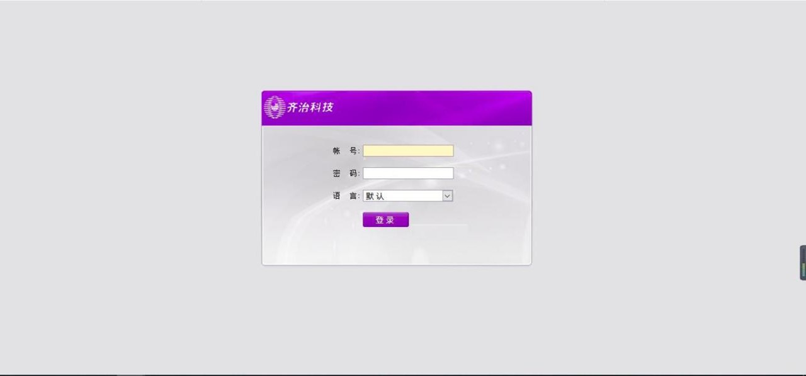
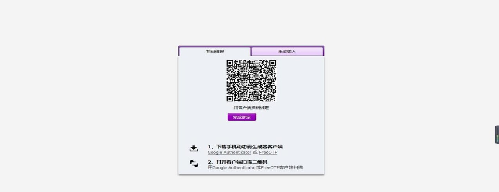
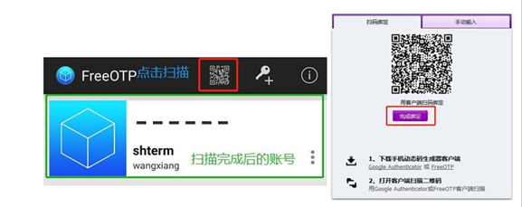
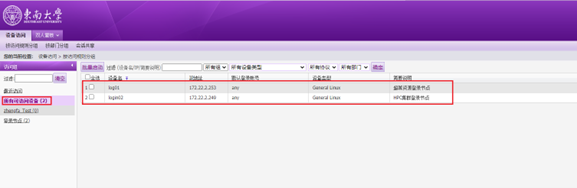
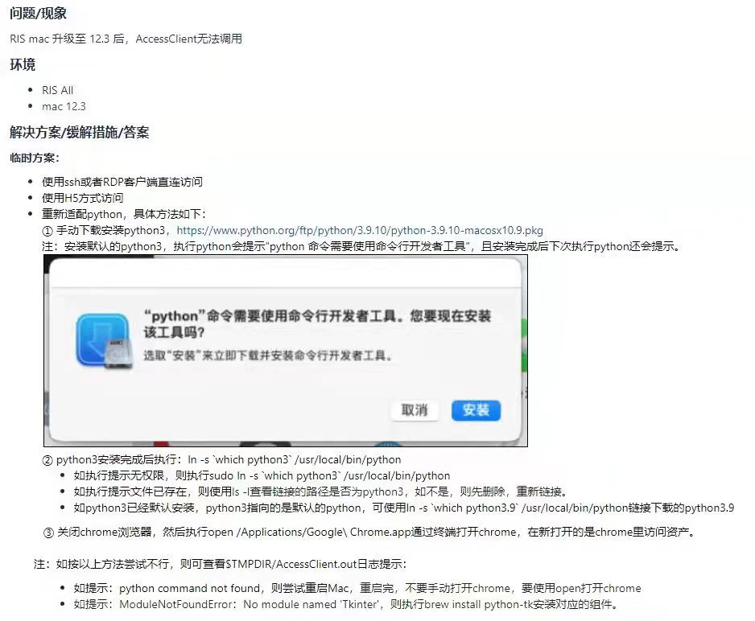

一、堡垒机登录
Contents
一、堡垒机登录#
1. 打开堡垒机#
浏览器（推荐火狐、谷歌）输入网址https://10.128.202.17/index.php ，用户名及密码栏输入收到邮件中的用户名和密码。
2. 两步认证#
堡垒机使用的是混合认证，用户初次登陆堡垒机，请根据页面提示下载认证 app。
下载完成后，[打开手机 app]—>点击[手机上方二维码图标]—>[扫描界面上的二维码]，将此账号跟您手机绑定起来。支持Google Authenticator或FreeOTP APP绑定。
3. 账号登录#
两步认证绑定成功后，再次登录，会出现一个随机的六位数字，需要在规定的时间内完成二次认证（随机数有时间限制，定时刷新）。
4. 设备访问#
登陆后点击所有可访问设备，其中log01和log02为超算平台的登录节点，用户登录后可以提交任务到超算平台。剩余的为云平台虚拟机设备，登陆后是独占的虚拟机。
5. 必装软件#
为了通过堡垒机连接超算平台或虚拟机，需要安装浏览器控件、SSH工具和FTP工具。
Windows: 须安装软件Xshell,Filezilla及浏览器提示的ShtermClient, 安装完成后，刷新浏览器，重新登录：输入用户名，密码登录。
Mac: 须安装软件Filezilla及浏览器提示的ShtermClient, 安装完成后，刷新浏览器，重新登录：输入用户名，密码登录。
如果Mac系统升级到12.3版本后可尝试以下方式解决。
Linux: 无需其他软件，直接通过ssh登录 用户名@10.128.202.17 密码是账号密码+空格+二次认证动态密码。